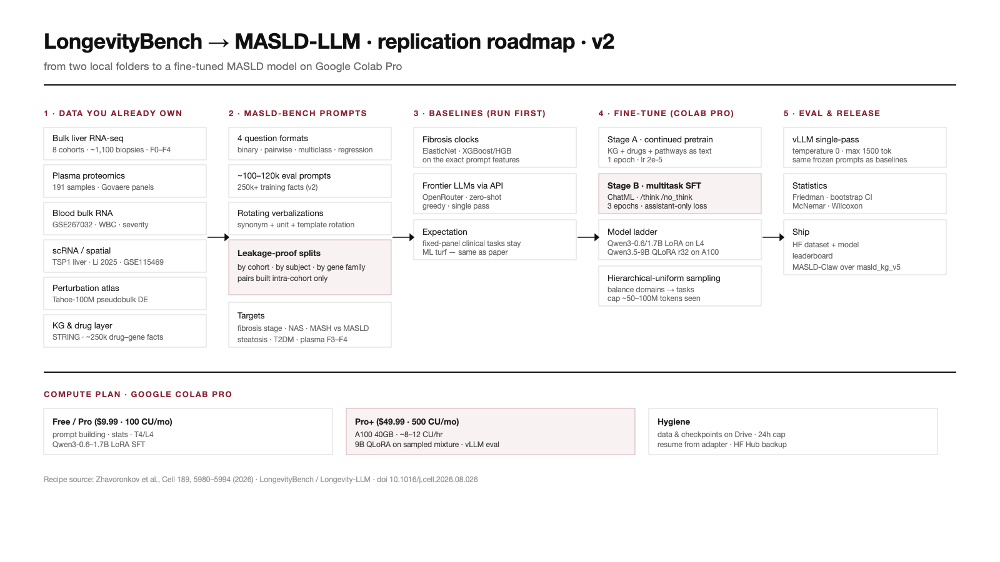

How to replicate the Cell 2026 “open benchmark + fine-tuned compact LLMs” recipe on your own disease — metabolic dysfunction-associated steatotic liver disease — using the two folders on this laptop, with all heavy compute on Google Colab Pro. v2 folded in the full disk audit (Fujiwara, drug corpus, knowledge tasks, Tahoe). v3 adds the external-cohort expansion: 62 curated accessions from your literature sweep, tiered by fit — 18 tier-1 datasets add ~250+ new human liver biopsies, open the DNAm domain, and add paired liver+plasma proteomics.
Five moves, each of which has a direct MASLD counterpart. Understanding the moves matters more than any single hyperparameter.
| Move | In the paper | MASLD translation |
|---|---|---|
| Benchmark | 17 tasks / 5 domains (NHANES clinical, GEO DNAm, GTEx transcriptomics, Olink proteomics, OpenGenes/SynergyAge genetics), 4 formats: binary, pairwise, multiclass, regression. Prompts carry real measurements; ground truth never stated in prompt. | ~12–15 tasks over liver bulk RNA-seq, plasma proteomics, blood RNA, gene/perturbation knowledge. Same four formats. |
| Leakage audit | Split by survey wave (NHANES), by study (DNAm, DeepMAge partition), by subject (GTEx, Olink), by protein family (OpenGenes), by organism (SynergyAge). Pairs constructed intra-study. | Split by cohort (EPos + Gubra held out forever), by subject (plasma, blood, paired biopsies), by gene family (knowledge tasks). |
| Baselines | ElasticNet / HGB / Cox trained on the exact features each prompt exposes, on the identical frozen test items — so LLM vs ML is a paired comparison. | Fibrosis “clocks”: ElasticNet / XGBoost on the same gene tokens the prompts show. Same frozen items. |
| Fine-tuning | Stage A continued pretraining (313k prompts: clock coefficients, UniProt/GO/Reactome/STRING facts) → Stage B multitask SFT (ChatML, 3 epochs, assistant-only loss, neat packing). LoRA r32 α32 on 9B; full-FT on 0.6–2.6B. 32k context. | Stage A on your KG text (masld_kg_v5, STRING, Reactome, GWAS, trial outcomes) → Stage B on your multitask prompts. QLoRA on Colab. |
| Evaluation | Zero-shot, single pass, greedy (temp 0), vLLM, max 1500 tokens. Friedman + bootstrap CI + McNemar/Wilcoxon with Holm correction. | Identical protocol; on smaller prompt counts report bootstrap CIs per task. |
Result to internalize: their 9B LoRA beat every frontier model (mean rank 4.4, CI 3.5–5.1) — but only where prompts had non-static, omics-derived feature sets. On fixed-panel clinical tasks (NHANES), classical ML stayed ahead of most frontier LLMs. Expect the same split on MASLD: fibrosis regression from a fixed 200-gene panel is ML turf; reasoning over variable gene sets and multi-cohort comparison is where an LLM earns its keep.
Inventoried this session (v2 re-audit: every file opened, counted, joined). Sizes from disk; counts from metadata files. This is unusually complete for a single-disease replication — the paper needed five public data domains, you have the MASLD equivalent of all five plus a knowledge-graph layer they had to build separately. The v1 plan used about a third of this; v2 uses essentially all of it.
| Resource | Size | Role in the MASLD-LLM program |
|---|---|---|
| Kamzolas 2026 release harmonised cohort (data/kamzolas/) — SANYAL n=78 + UCAM n=58, SAF-annotated (fibrosis, NAS, steatosis, ballooning, inflammation, T2DM, age, sex) + batch-corrected counts | 297 MB | The NHANES-analogue core: train-side clinical/transcriptomic tasks in all four formats. |
| EPos cohort (epos_metadata.csv, n≈157) + Gubra (GSE126848, n≈40) | ~45 MB | Held-out test cohorts — the “survey wave” split. Never trained on. |
| Discovery cohort (349 biopsies: GSE130970 n=78, GSE135251 n=216, GSE185051 n=55) with fibrosis stages | 50 MB matrix | Additional train-side bulk RNA-seq volume. |
| v2 · Fujiwara longitudinal block — expression_matrix.csv (213 samples; TU n=48, HU n=164, KU n=56, TH n=3) + 271-row annotated metadata (age, sex, fibrosis, NAS, PLS risk) + 58 paired-biopsy trajectories | 50 MB | More than doubles train-side clinical volume; adds progression-prediction tasks (a format the paper lacked); KU series held out as internal test. |
| Plasma proteomics reference — 191 samples, advanced-fibrosis (F3–F4) + T2DM labels; Govaere panels (25-gene, 194-signature, 57 BMs) | 5.9 MB | The Olink-analogue: fixed-panel proteomics tasks; the 25-gene panel is your “published clock”. |
| Blood bulk RNA-seq GSE267032 (WBC, severity-graded patients) | 1.5 MB | Circulating-proxy tasks: severity from blood — clinically the most deployable task family. |
| Paired-biopsy longitudinal set (ucam_sanyal, n=58 pairs) | 39 MB | Prediction-of-progression tasks — a format the paper didn’t even have. Subject-split by construction. |
| Knowledge graph masld_kg_v5.gexf + STRING v12 + Reactome graph + GWAS catalog + curated MASLD gene sets | 168 MB + | Stage-A continued-pretraining corpus — your UniProt/Reactome/STRING equivalent, already disease-specific. |
| Drug layer: DrugBank/DrugCentral/CTD extracts (drug_data/ ~293k rows), kg_additions_drug_target.csv (62k), trial outcomes (resmetirom, semaglutide, lanifibranor, pioglitazone…) | 40 MB | v2: retrieval-style knowledge tasks (drug→target, drug→category) — ~250k raw facts; also the Longevity-Claw-analogue agent layer. |
| v2 · Knowledge bases: MSigDB c2 (7,233 sets / 65k memberships), FerrDb (5,195), QuickGO RCD (9,115), scRNA liver references (20 cell types), GSE115469 (8,445 cells) | 10 MB | Pathway-membership, ferroptosis-role, cell-type-marker tasks; ground truth from curated data, not free text. |
| v2 · Your computed DGE: t1_ranked_logFC.csv (11,676 genes), fgsea tables, DESeq results | 1 MB | Masked direction-of-change tasks with real effect-size ground truth (OpenGenes analogue). |
| v3 · External-cohort expansion (62 accessions curated from your literature sweep): 7 human liver biopsy cohorts (~250+ samples), DNAm NAFLD study, liver proteomics, 6 PHH spheroid perturbation panels, snRNA/ATAC, HSC datasets — full manifest in external_cohorts_v3.csv | ~10–15 GB | Tier 1 (18 datasets) feeds prompt builders directly: new train cohorts, the DNAm domain (paper’s GEO DNAm analogue), perturbation corpus, paired liver+plasma proteomics. Tier 2 = phase-2 scRNA/regulatory. Tier 3 = knowledge-corpus facts only. |
| BUILD STATUS · 2026-09-29: first freezes landed in prompts/ — 58,194 prompts (frozen test 13,273 from EPos+Gubra; train 44,921 across Kamzolas clinical, Fujiwara, MSigDB, drug-layer, DGE-direction corpora) with checksummed MANIFEST; 11 tier-1 external datasets (460 MB) downloaded and staging-audited. See RUNLOG.md. | 58,194 prompts | First working artefacts of the program — the frozen test side is locked before any new cohort enters training. |
| Tahoe-100M pseudobulk DE (perturbation atlas), Tabula Sapiens liver h5ad, Li 2025 spatial, GSE115469 scRNA | 4.9 GB | The SynergyAge-analogue (perturbation → effect) + cell-type tasks. Phase 2 — do not upload yet. |
Folder totals: ~/masld-revision 9.6 GB · ~/masld-clinical-transcriptomics-github 491 MB. The locked refinement pipeline (stages 00–33) in the github folder already encodes your preprocessing conventions — reuse its qnorm/lock logic where notebooks touch the same cohorts.
Task IDs prefixed MB- (MASLD-Bench). Split unit is the anti-leakage spine — decide it before writing a single prompt.
| Task | Format & target | Source | Split unit | Est. prompts |
|---|---|---|---|---|
| MB-1001/2/3/5/6 | binary · pairwise · multiclass · regression — fibrosis F0–F4, NAS 0–8 | Kamzolas SANYAL+UCAM + discovery cohorts; top-variance 200 genes (single) / 100 (pairwise) | cohort | ~25k |
| MB-2xxx | same four formats, frozen test | EPos (n≈157) + Gubra (n≈40) | held out | ~4k |
| MB-3001/2/3 | binary (F3–F4) · pairwise · regression — plasma proteomics | 191-sample plasma reference over Govaere fixed panels | subject | ~3k |
| MB-4001/2 | multiclass severity · regression (NAS) — blood RNA | GSE267032 WBC (n=35) | subject | ~300 |
| MB-5001/2 | binary progression · regression (Δfibrosis) — paired biopsies | ucam_sanyal 58 longitudinal pairs | subject | ~120 |
| MB-6xxx | knowledge retrieval: gene→pathway, gene→trait, drug→outcome | curated MASLD sets, GWAS catalog, Reactome, trial outcomes | gene family | ~15k |
| MB-7xxx | masked-gene direction-of-change with age (OpenGenes analogue) | discovery DGE tables + Li 2025 signatures | gene family | ~2k |
| MB-8xxx | four formats over the Fujiwara block (train: TU+HU+TH) | expression_matrix.csv + parsed GEO metadata | series | ~30k |
| MB-9xxx | same formats, KU series internal test | Fujiwara KU n=56 | held out | ~5k |
| MB-85xx | progression: Δfibrosis from baseline axis scores | 58 paired biopsies + trajectories | subject | ~120 |
| MB-61xx | pathway membership, ferroptosis role, cell-type markers | MSigDB c2, FerrDb, QuickGO, scRNA refs | gene family | ~40k |
| MB-70xx | masked direction-of-change (MASLD vs healthy liver) | your t1_ranked_logFC (11,676 genes) | gene family | ~10k |
| MB-91xx/92xx | perturbation → direction / magnitude / pairwise (SynergyAge analogue) | Tahoe-100M liver shards (43 × ~4M rows) | cell line | 60k |
Volume after v2 additions: ~100–120k evaluation-grade prompts and 250k+ training-side facts. Prompt anatomy follows the paper: rotating instruction templates (3+ per question type), gene tokens as GENE=12.4 pairs, clinical block (age/sex/T2DM), answer formats enumerated in the prompt. Multiclass shows 200 genes, pairwise 100, regression 400 without annotation — the paper’s exact geometry. Median prompt ≈ 3–6k tokens; well under the 8k cutoff_len in the training config.
The paper’s headline claim — compact fine-tuned LLMs beating frontier models — holds only on tasks where the feature set is non-static and omics-sampled. When you design tasks, resist making everything a fixed 200-gene panel; keep per-prompt sampled gene sets (top-variance within cohort, most-dissimilar for pairwise) so the benchmark measures omics interpretation, not panel memorization.

Your laptop (M2, 8 GB, ~16 GB free disk) is right to sit this out: it can’t hold the 9B model, let alone train it. Colab Pro exists for exactly this shape of work. Current tiers: Pro $9.99/mo → 100 compute units (CU); Pro+ $49.99/mo → 500 CU. A100 40GB draws ≈ 8–12 CU/hr; L4 ≈ 2–3; T4 ≈ 1.5–2.
| Run | Runtime | Est. CU | Notes |
|---|---|---|---|
| 01 · Prompt construction | CPU / T4 | < 2 | pandas only; the KG→text dump is the slow cell |
| 02 · ML baselines + frontier API eval | CPU | ~0 | API cost ≈ $5–15 outside Colab (OpenRouter) |
| 03 · Qwen3-0.6B LoRA SFT | L4 | ~4 | ~45 min; the smoke test |
| 03 · Qwen3-1.7B LoRA SFT | L4 | ~10 | ~2–3 h |
| 03 · Qwen3.5-9B QLoRA stage A + B (v2 mixture, ~60k prompts sampled) | A100 40GB | ~65–75 | Pro+ month; ~6–9 h across 2–3 sessions; hierarchical-uniform cap keeps tokens seen ≈ paper-sized |
| 05 · vLLM eval of your models | A100 | ~6 | single-pass, temp 0, max 1500 tok |
Sanity anchor: the paper used 8× RTX PRO 6000 for 28 h on the 9B — roughly 200+ A100-hours of headroom you don’t need, because your sampled corpus is paper-sized by design.
v2 volume discipline: raw corpora now exceed 250k prompts (~300M+ tokens). Do not train on all of it. Hierarchical-uniform sampling (domains → tasks → cap) into a ~60k-prompt stage-B mixture, ~50–100M tokens seen, is both what the paper did for imbalance and what keeps the 9B run inside one Pro+ month. The unsampled pools remain frozen for future runs.
Single-GPU Colab pushes you to LoRA/QLoRA. That’s fine — the paper’s own 9B result was LoRA r32 α32, and at 0.6–1.7B scale LoRA recovers nearly all of full-FT quality on multitask SFT. If you later want the exact full-FT replication, that’s the point to move to a rented H100 node (Lambda/RunPod, ~$2–3/hr) instead of Colab.
Each phase ends at a git commit + Drive artifact. Nothing in phase N+1 starts until phase N’s output is frozen.
| Risk | Mitigation |
|---|---|
| Batch effects leak stage information (cohort ≠ disease severity) | Prompt features are within-cohort normalized; pairwise prompts intra-cohort only; report a cohort-confound check (predict cohort from prompt features — if a classifier does it easily, add batch-rotation verbalization or drop confounded genes). |
| Qwen3.5-9B hybrid GatedDeltaNet attention on Colab stack | Pin transformers≥4.57 + flash-linear-attention; if the kernels fight CUDA on Colab, fall back to Qwen3-8B (standard attention, same family) — the paper’s claim is recipe-level, not checkpoint-level. |
| Colab preempts mid-epoch | save_steps 0.25 to Drive; resume from adapter; all data reads are Drive-first. |
| CU burn on idle/failed sessions | Disconnect between stages; watch the Resources meter; A100 only for the two 9B sessions. |
| Frontier-API drift mid-study | Freeze the model list + date; pin responses to frontier_runs/*.jsonl.gz so the bracket is reproducible even if providers deprecate models. |
| v3 external cohorts: batch effects and duplicated samples across accessions (e.g. overlapping study arms like GSE285431/GSE303583) | Deduplicate by sample metadata before prompt building; treat same-paper dataset pairs as one cohort for splitting; verify tissue type (blood vs liver) on download for anything unverified in the manifest. |
| Test-set contamination via your own iterated prompt tweaks | The MANIFEST checksum rule: test JSONLs are written once; any change to builders bumps a version and requires rebuilding all eval runs. |
| File | Purpose |
|---|---|
| colab/01_MASLD_Bench_prompt_construction.ipynb | Prompt builders, split discipline, freeze + manifest (run on Pro CPU/L4) |
| colab/02_baselines_and_frontier_eval.ipynb | ML fibrosis clocks + OpenRouter frontier eval + scoring (run on CPU runtime) |
| colab/03_finetune_masld_llm.ipynb | LLaMA-Factory LoRA/QLoRA configs, 0.6B→9B ladder, vLLM eval, publish steps |
| assets/masld-pipeline-diagram.png | The five-stage pipeline figure (this document, Fig. 1) |
Notebooks are runnable skeletons: builders for the core liver tasks are fully implemented; plasma/blood/knowledge builders are stubbed with exact instructions where layouts need a first manual look.